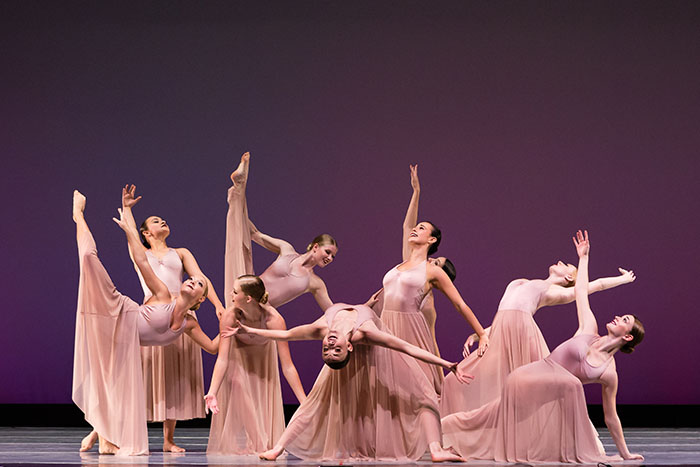
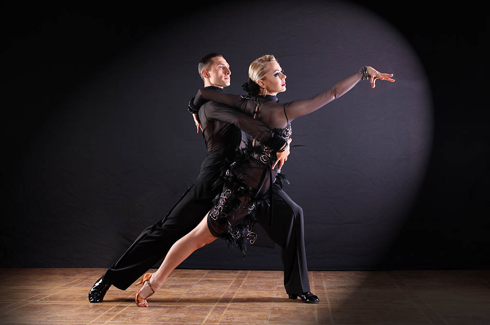

Ten styl powstał w Ameryce we wczesnych latach XX wieku.
Jednym z jego podgatunków jest Modern Jazz, Brodway Jazz itp.
Był on w tamtych czsach jednym z najsłynniejszych stylów tanecznych.
Taniec współczesny
Jest to połączenie wielu odległych od siebie rodzai tańca takich jak jezz i hip-hop.
Można przedstawić w nim swoje uczucia- ból, cierpienie oraz radość i szczęście.
s


Latino Americano
Latynowski styl tańca, na ogół z partnerem/partnerką.